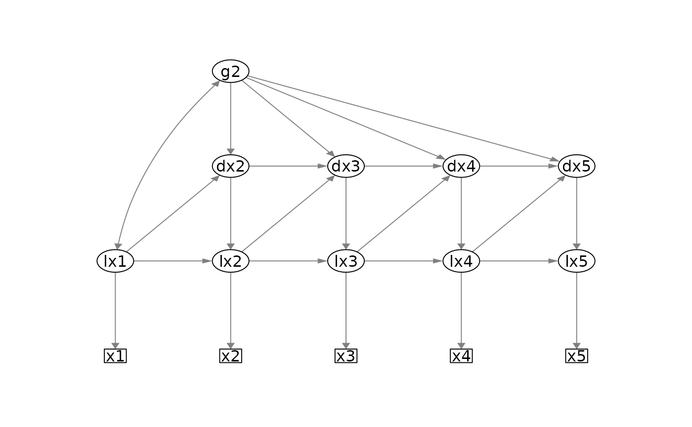

Plot simplified path diagram of univariate and bivariate latent change score models
Source:R/plot_lcsm.R
plot_lcsm.RdNote that the following three arguments are needed to create a plot (see below for more details):
lavaan_object: the lavaan fit object needs to be specified together with alcsm: a string indicating whether the latent change score model is "univariate" or "bivariate", andlavaan_syntax: a separate object with the lavaan syntax as a string
Usage
plot_lcsm(
lavaan_object,
layout = NULL,
lavaan_syntax = NULL,
return_layout_from_lavaan_syntax = FALSE,
lcsm = c("univariate", "bivariate"),
lcsm_colours = FALSE,
curve_covar = 0.5,
what = "path",
whatLabels = "est",
edge.width = 1,
node.width = 1,
border.width = 1,
fixedStyle = 1,
freeStyle = 1,
residuals = FALSE,
label.scale = FALSE,
sizeMan = 3,
sizeLat = 5,
intercepts = FALSE,
fade = FALSE,
nCharNodes = 0,
nCharEdges = 0,
edge.label.cex = 0.5,
...
)Arguments
- lavaan_object
lavaan object of a univariate or bivariate latent change score model.
- layout
Matrix, specifying number and location of manifest and latent variables of LCS model specified in
lavaan_object.- lavaan_syntax
String, lavaan syntax of the lavaan object specified in
lavaan_object. Iflavaan_syntaxis provided a layout matrix will be generated automatically.- return_layout_from_lavaan_syntax
Logical, if TRUE and
lavaan_syntaxis provided, the layout matrix generated for semPaths will be returned for inspection of further customisation.- lcsm
String, specifying whether lavaan_object represent a "univariate" or "bivariate" LCS model.
- lcsm_colours
Logical, if TRUE the following colours will be used to highlight different parts of the model: Observed variables (White); Latent true scores (Green); Latent change scores (Blue) ; Change factors (Yellow).
- curve_covar
See semPaths.
- what
See
semPlot. "path" to show unweighted grey edges, "par" to show parameter estimates as weighted (green/red) edges- whatLabels
See semPaths. "label" to show edge names as label, "est" for parameter estimates, "hide" to hide edge labels.
- edge.width
See semPaths.
- node.width
See semPaths.
- border.width
See semPaths.
- fixedStyle
See semPaths.
- freeStyle
See semPaths.
- residuals
See semPaths.
- label.scale
See semPaths.
- sizeMan
See semPaths.
- sizeLat
See semPaths.
- intercepts
See semPaths.
- fade
See semPaths.
- nCharNodes
See semPaths.
- nCharEdges
See semPaths.
- edge.label.cex
See semPaths.
- ...
Other arguments passed on to semPaths.
References
Sacha Epskamp (2019). semPlot: Path Diagrams and Visual Analysis of Various SEM Packages' Output. R package version 1.1.1. https://CRAN.R-project.org/package=semPlot/
Examples
# Simplified plot of univariate lcsm
lavaan_syntax_uni <- fit_uni_lcsm(
data = data_bi_lcsm,
var = c("x1", "x2", "x3", "x4", "x5"),
model = list(
alpha_constant = TRUE,
beta = TRUE,
phi = TRUE
),
return_lavaan_syntax = TRUE,
return_lavaan_syntax_string = TRUE
)
lavaan_object_uni <- fit_uni_lcsm(
data = data_bi_lcsm,
var = c("x1", "x2", "x3", "x4", "x5"),
model = list(
alpha_constant = TRUE,
beta = TRUE,
phi = TRUE
)
)
plot_lcsm(
lavaan_object = lavaan_object_uni,
what = "cons", whatLabels = "invisible",
lavaan_syntax = lavaan_syntax_uni,
lcsm = "univariate"
)

if (FALSE) {
# Simplified plot of bivariate lcsm
lavaan_syntax_bi <- fit_bi_lcsm(
data = data_bi_lcsm,
var_x = c("x1", "x2", "x3", "x4", "x5"),
var_y = c("y1", "y2", "y3", "y4", "y5"),
model_x = list(
alpha_constant = TRUE,
beta = TRUE,
phi = TRUE
),
model_y = list(
alpha_constant = TRUE,
beta = TRUE,
phi = TRUE
),
coupling = list(
delta_lag_xy = TRUE,
delta_lag_yx = TRUE
),
return_lavaan_syntax = TRUE,
return_lavaan_syntax_string = TRUE
)
lavaan_object_bi <- fit_bi_lcsm(
data = data_bi_lcsm,
var_x = c("x1", "x2", "x3", "x4", "x5"),
var_y = c("y1", "y2", "y3", "y4", "y5"),
model_x = list(
alpha_constant = TRUE,
beta = TRUE,
phi = TRUE
),
model_y = list(
alpha_constant = TRUE,
beta = TRUE,
phi = TRUE
),
coupling = list(
delta_lag_xy = TRUE,
delta_lag_yx = TRUE
)
)
plot_lcsm(
lavaan_object = lavaan_object_bi,
what = "cons", whatLabels = "invisible",
lavaan_syntax = lavaan_syntax_bi,
lcsm = "bivariate"
)
}